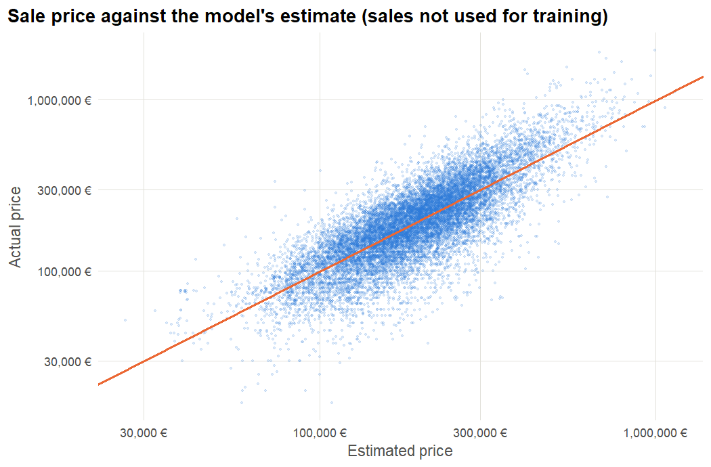

What drives housing prices in Lille? Real sales, public data
Every recorded sale of a flat or a house in the Lille metropolitan area from 2021 to 2025, from the tax administration's open data. I built a quality-adjusted price index, measured the weight of location, and fitted a valuation model that flags sales far from the market price.
Is this price in line with the market?
Buyers ask it before an offer, banks before a mortgage, estate agents before a listing, and compliance teams when a transaction looks odd: a property bought far above or below its value is a classic red flag for money laundering in real estate. Since 2019 the French tax administration publishes every property sale (DVF). That is enough to answer three questions for the Lille metropolitan area:
From 553,756 raw rows to 76,047 usable sales
DVF records each item of a sale: a flat, its cellar and its parking space appear as three rows sharing one total price. Dividing that price by the flat's surface would overstate the price per m², so the analysis keeps sales of exactly one dwelling (with or without outbuildings), then removes implausible values.
Prices are back where they were in 2021
Medians can mislead: when rates rose in 2023, fewer first-time buyers bought small flats, so the mix of homes sold changed. A regression with commune, type, surface and rooms isolates the price change for a comparable home each year: a quality-adjusted (hedonic) index.
Price index, 2021 = 100
Quality-adjusted (regression) against the raw median price per m²
Comparable homes gained about 5% in 2022, lost about 6% by 2024, and recovered in 2025.
Price per m² in the 20 busiest communes
Median, 2024–2025: more than twice as much in Marcq-en-Barœul or Lille as in Roubaix, a few kilometres away


How good is a price estimate from public data?
The model explains 63% of the variation in prices. On sales it never saw, the median error is ±21%: honest for data that says nothing about condition, floor, view or energy rating. Good enough to screen sales, not to value one specific home.
Who can use this, and how
Three steps in R
The key cleaning decision: a sale's price can only be divided by a surface when the sale contains one dwelling.
one_dwelling <- sales |>
group_by(id_mutation) |>
filter(sum(type_local %in% c("Appartement", "Maison")) == 1) |> # exactly one dwelling
ungroup() |>
filter(type_local %in% c("Appartement", "Maison"))
clean <- one_dwelling |>
mutate(price_m2 = valeur_fonciere / surface_reelle_bati) |>
filter(surface_reelle_bati >= 10, surface_reelle_bati <= 400,
price_m2 >= 500, price_m2 <= 12000)One coefficient per year, holding commune, type, surface and rooms constant: the price change for a comparable home.
index_model <- lm(log(price_m2) ~ factor(year) + type + log(surface) + rooms + commune,
data = sales)
year_effects <- tidy(index_model) |>
filter(grepl("factor\\(year\\)", term)) |>
transmute(year = as.integer(sub("factor\\(year\\)", "", term)),
hedonic = exp(estimate) * 100) # 2021 = 100Fitted on 80% of the sales, judged on the other 20%: the honest test of a valuation model.
valuation <- lm(log(price) ~ log(surface) * type + rooms + commune + quarter, data = train)
test <- test |>
mutate(estimate = exp(predict(valuation, newdata = pick(everything()))),
gap = price / estimate - 1)
median(abs(test$gap)) # typical error
mean(test$gap > 0.50) # sales far above the marketRead the report, run the code
- GitHubBrowse every file of this project
- report/lille_housing.htmlThe full R Markdown report
- README.mdProject overview
- R/01_prepare_data.RDownload and clean DVF
- R/02_analysis.RTrends, index, model, figures
Source: Demandes de valeurs foncières géolocalisées, Etalab / DGFiP, Licence Ouverte 2.0.